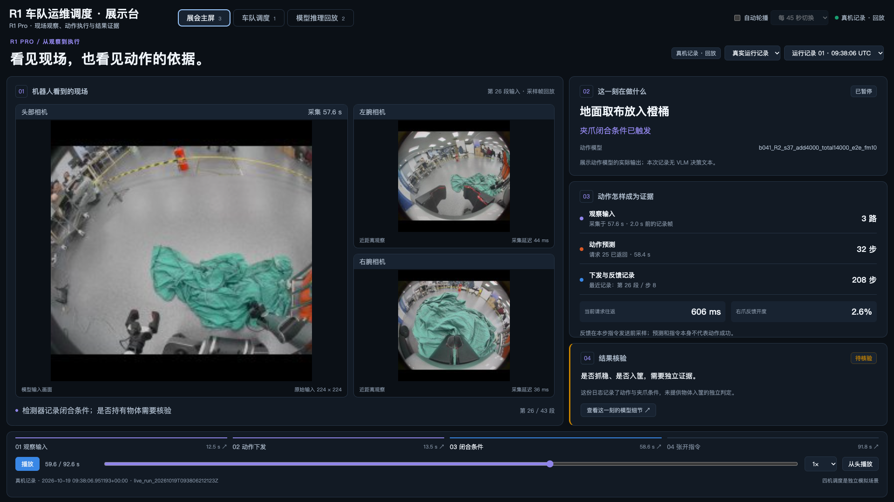
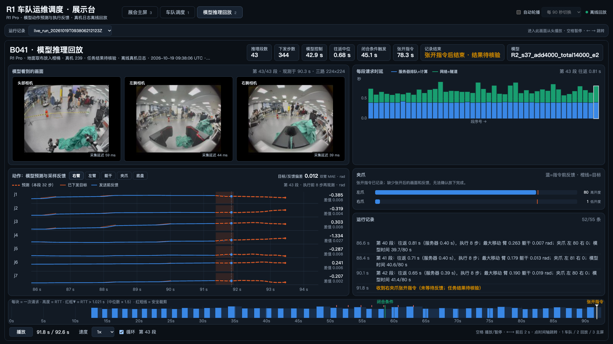
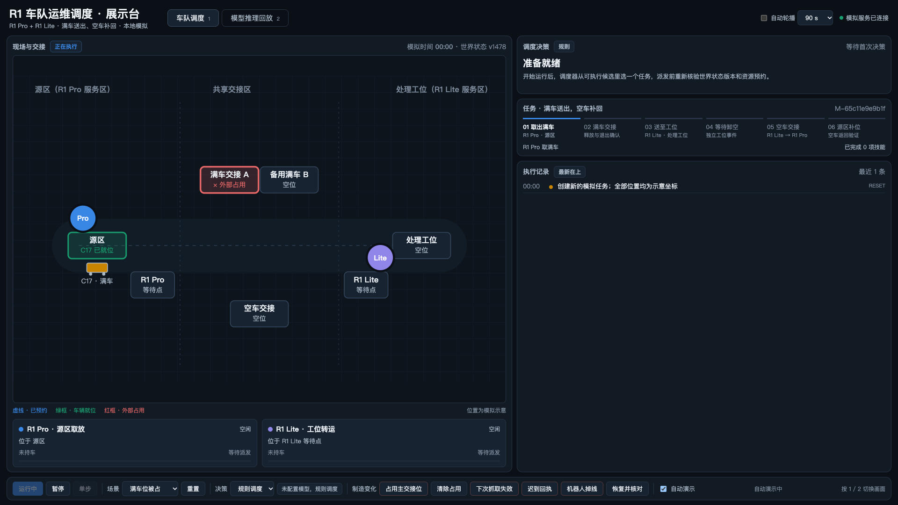

把动作讲清楚，
把接力与恢复展示出来。
这份交付包让同学在本机完成熟悉、讲解和循环展示。先看真实动作记录，再看同一时刻的模型细节，最后用四机模拟说明一辆物资车怎样交接、遇到中断怎样恢复。
本手册可直接双击打开。完整展示先按下方方法启动；“直接看回放”只播放详细记录，不含主屏与四机模拟。
01 · 先启动，再看效果
把 ZIP 完整解压到可写的本地文件夹，例如桌面。保持文件夹结构，提前在展台电脑安装 Python 3.9+ 和 Chrome 或 Edge；交付包不附带这些软件。
运行 start_live.sh
./start_live.sh无需附加参数。自动读取 live_settings.json（当前机器人 192.168.5.6、端口8773），只读测量时差，按需启动缺少的展示采集服务，接收相机和VLA证据并打开实时观察；如SSH提示则输入密码。保持终端开启。
读取相机与VLA日志
只读VLA旁路未运行时，通过SSH启动独立新目录里的采集器；按提示输入密码。原机器人文件和启动命令不变，相机接口只读。
./start_robot_and_live.sh。 此入口包含真实机器人运动，需先准备现场。模型服务器仍须预先运行。启动前可用 --check 做只读检查，见 完整启动说明。./start_offline.sh。 无需机器人、SSH或外网，自动打开原真实记录主屏，保留车队模拟与模型推理回放。地址为 http://127.0.0.1:8771/。见 离线启动说明。http://服务电脑的局域网IPv4:8773/。讲解前先关闭顶部“自动轮播”。首次接入与只读旁路说明见 LIVE_START.txt。


02 · 10 分钟熟悉清单
前 5 分钟：会看、会切换
- 0–1 分钟：启动成功，关闭“自动轮播”；确认主屏来源是“真实运行记录”。
- 1–3 分钟：试主屏的暂停、播放、从头播放和四个章节；换一次运行记录，再切回第一条。
- 3–4 分钟：点“03 闭合条件”，再点“查看这一刻的模型细节 ↗”；确认详细回放停在同一条记录、同一时刻。
- 4–5 分钟：练习 1 / 2 / 3 切画面，空格播放/暂停，左右箭头跳 2 秒。
后 5 分钟：会演示、会收场
- 5–7 分钟：按 1，关闭底栏“自动演示”；选“标准交接”→“重置”→“开始运行”。观察同一辆 C17 落地交接。
- 7–8 分钟：有机器人正在执行时点“机器人掉线”，看到待核对；点“恢复并核对”，看记录与任务继续。
- 8–9 分钟：按下面的 3 分钟脚本演练一次；时间紧时不等整轮跑完。
- 9–10 分钟：练退出与重启；再设置无人展示。确认现场分辨率、文字、声音环境与鼠标都适合讲解。
快捷键在下拉框、输入框编辑时不会抢按键；先点击画面空白处再按即可。Windows / Linux 常规窗口用 F11 全屏；独立全屏窗口可直接 Alt+F4 退出。Mac 用 ⌘W 关闭展示窗口。
03 · 可以照着讲的 3 分钟演示
讲解前关闭“自动轮播”和车队页“自动演示”，决策选“规则调度”。主屏选第一条真实运行记录。下面的“机器人掉线”只影响本地模拟。
| 时间 | 手上操作 | 对观众说 |
|---|---|---|
| 0:00–0:35 | 按 3。播放主屏；指向三路相机，再指向右侧“动作预测”和“下发与反馈记录”。 | “这里是 R1 Pro 取布放筐的真实运行记录。相机、模型预测和执行反馈来自同一次运行，我们能把一个动作的依据和过程放在一起看。” |
| 0:35–1:10 | 点“03 闭合条件”，再点“查看这一刻的模型细节 ↗”。指向预测虚线、已下发曲线与反馈。 | “现在停在同一时刻。虚线是这一段的 32 步动作预测；另外两条记录展示目标与反馈。夹爪条件有日志，物体是否抓稳、是否入筐还要独立核验。” |
| 1:10–1:55 | 按 1。选“标准交接”→“重置”→“开始运行”。看 C17 从 Pro 01 送出；指向交接位、任务进度和执行记录。 | “这一页用四机模拟说明运输组织：Pro 01 → Lite 01 → Lite 02 → Pro 02。交接先放车、退出，再由下一台接走；工位模拟确认卸空后，空车反向补回。” |
| 1:55–2:30 | 有机器人正在执行时，点“机器人掉线”。看到“待核对 / UNKNOWN”和保留的资源，再点“恢复并核对”。若仍暂停，点“开始运行”。 | “遇到通信中断，系统先保留资源并等待核对。这里由模拟器核对保存状态，然后释放或重试；接真机时需要真实设备回执与状态核验。” |
| 2:30–3:00 | 确认执行记录出现恢复信息。按 3，点“从头播放”。 | “这个展示包呈现两部分：一部分是真实动作的可追溯记录，一部分是接力运输与恢复的调度模拟。下一步把医院现场观察和执行回执接到同一条证据链上。” |
04 · 同学讲解与无人展示，两套设置
把画面停在你正在讲的地方
顶部自动轮播：关闭。车队底栏自动演示：关闭。用按键或顶部标签切画面；车队用“开始运行 / 暂停 / 单步”，回放用暂停或章节跳转。
车队点“暂停”或“单步”也会自动关闭其“自动演示”。单纯切换到主屏不会替你暂停车队模拟。
先恢复正常，再勾两个选项
车队页选“规则调度”和“标准交接”，点“重置”，勾上底栏自动演示。再勾顶部自动轮播，建议选 每 90 秒切换。未勾选时选项置灰，开启或调整间隔后重新计时。
无人前先演练一轮。发生掉线或待核对时自动演示会等待同学处理，不会反复重试启动。
| 开关 | 它做什么 | 它不会做什么 |
|---|---|---|
| 自动轮播 顶部，默认关闭 | 按所选间隔切换：主屏 → 车队 → 详细回放。进入详细回放从头播；主屏离开暂停、返回继续。 | 不负责恢复故障，也不改变车队运行模式。 |
| 自动演示 车队底栏，默认开启 | 驱动车队模拟；一轮完成停 8 秒，换下一场景：标准交接 → 满车位被占 → 首次抓取失败。 | 不切换三个画面；掉线或待核对时等待处理。 |
05 · 观众问到时，准确地回答
| 观众的问题 | 本交付版的答案 |
|---|---|
| 这是医院直播吗？ | 当前相机画面来自 R1 Pro 取布放筐的历史运行记录，原始输入是 224×224 采样帧；不是医院现场视频直播。 |
| 四台机器真的在跑吗？ | 四机页是本地离散事件模拟，展示 2 台 Pro + 2 台 Lite 的接力、资源预约、回执和恢复逻辑。当前没有连接四台实机。 |
| 这是 VLM 在思考吗？ | 这两条真实记录包含动作模型输出，没有 VLM 文字决策。车队默认“规则调度”；另有可配置的模型调度接口，但本包无需配置即可展示。 |
| 有没有成功率或精度？ | 现有两条记录的结果保持“待核验”，不能据此给出整体成功率。目标/反馈偏差没有做时序对齐，不能作为跟踪精度。闭合条件和张开指令也不等于抓稳或入筐成功。 |
| 可以接实时吗？ | 实时观察保留现有三路相机，通过独立只读旁路展示VLA输入、预测、下发、反馈与结果证据。原机器人文件及回放功能不变；接入步骤见LIVE_START.txt。 |
06 · 现场遇到问题，按这里处理
启动不成功，或提示没有 Python
完整解压到可写文件夹后再启动，不在 ZIP 预览里运行。可先双击 check.bat（Windows），或在包根运行 sh check.sh（Linux / Mac）；它只检查 Python 与文件完整性，不启动展示。
完整展示需要 Python 3.9+；Windows 可在终端查 py -3 --version 或 python --version，Linux / Mac 查 python3 --version。Windows 若未加入 PATH，重新运行 Python 安装程序补选后重开终端。
现场暂时没有 Python：双击 第一条详细回放 HTML，可离线循环播放；这条备用路径没有车队或主屏。
端口 8773 被占用，或打开了旧版本
在包根终端改用空闲端口。启动器不会替你结束其他程序；只有同目录、数据库与实时配置匹配的服务才能复用。另一份旧交付包正在运行时，可直接换端口启动这一份。
./start_live.sh --port 8772此时手动打开 http://127.0.0.1:8772/。若想回到 8773，在原启动终端 Ctrl+C 退出旧服务，再重新启动本包。
浏览器白屏、相机不出现或服务无法连接
确认启动终端还开着且没有错误；本机使用 http://127.0.0.1:端口/，局域网同事使用 http://服务电脑的局域网IPv4:端口/，默认端口为 8773。同事电脑上的 127.0.0.1 指向同事自己的电脑。不要直接双击 exhibit/static/index.html，完整页面需要服务。
主屏来源选“真实运行记录”，等几秒；然后刷新。Windows / Linux 可 Ctrl+Shift+R，Mac 可 ⌘Shift+R。仍异常时关闭展示窗口、在启动终端 Ctrl+C、重新启动。期间先用独立详细回放作为备用。
车队停在 UNKNOWN / 待核对，或者不动了
按 1 看执行记录。若为掉线或待核对，点“恢复并核对”，必要时再点“开始运行”；这是模拟状态核验。重启时保存的未完成动作也可能进入待核对。
只想从头展示：选“规则调度”及“标准交接”→“重置”→“开始运行”。重置会清掉本地这一轮模拟进度；真实回放记录不变。再勾“自动演示”可继续自动换场景。
显示模型未配置，或模型调度报错
交付默认用“规则调度”，不需要模型、API、密钥或网络。误切“模型调度”时，切回“规则调度”，再重置、开始即可。
需要真实模型实验时由技术同学按 exhibit/MODEL.md 配置并提前验证。当前接口输入是模拟世界状态与候选动作 JSON，不含相机；接模型后也不能直接称为医院视觉推理。端点配置有效不等于模型已连通。
怎么退出、重启，哪些进度会保留？
Windows / Linux 用 Alt+F4 关闭全屏展示，Mac 用 ⌘W。再到启动终端按 Ctrl+C 停止本次启动的服务；只关浏览器不会停止后台服务。
如果终端提示“复用现有展示服务”，服务属于最初的启动窗口，去那个窗口停止。重启仍用原启动脚本；模拟数据库保存上一轮状态，想重新讲解就到车队页“重置”。回放文件是静态记录，重启不改变内容。
分辨率、全屏或快捷键不合适
建议屏幕设为 1920×1080，浏览器缩放 100%。快捷键无响应时先点击画面空白处；下拉框有焦点时按键不会切页。若未自动全屏，在普通 Chrome / Edge 窗口使用浏览器全屏菜单（Windows / Linux 常用 F11，Mac 常用 Ctrl+⌘F）。
Windows Chrome / Edge 的全屏、键盘与现场缩放请在正式开展前用交付包走完一次清单。
07 · 交接时一起带走什么
给负责展示的同学
整个解压文件夹、这份手册和 QUICKSTART.txt。先在目标电脑演练一遍，然后保留能工作的这一份。所有图片、字体回退与回放资源都在本地。
包内 SHA256SUMS.txt 可由 check.bat / check.sh 核对；无需手动操作清单即可启动展示。
2026-10-27 v3 更新
修复隐藏回放页延迟切屏消息和快速切屏焦点争用；轮播间隔明确标注，开启或调整后重新计时。末尾张开指令缺少后续画面和反馈时，两处画面均显示提示；这不代表已确认放下完成，原始记录保持不变。